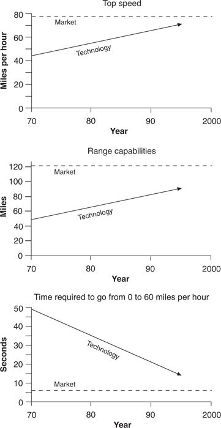

Electric-powered vehicles have hovered at the fringe of legitimacy since the early 1900s, when they lost the contest for the dominant vehicle design to gasoline power. Research on these vehicles accelerated during the 1970s, however, as policy makers increasingly looked to them as a way to reduce urban air pollution. The California Air Resources Board (CARB) forced an unprecedented infusion of resources into the effort in the early 1990s when it mandated that, starting in 1998, no automobile manufacturer would be allowed to sell any cars in California if electric vehicles did not constitute at least 2 percent of its unit sales in the state. 1
In my hypothetical responsibility for managing an automaker’s program, my first step would be to ask a series of questions: How much do we need to worry about electric cars? That is, aside from California’s mandate, does the electric car pose a legitimate disruptive threat to companies making gasoline-powered automobiles? Does it constitute an opportunity for profitable growth?
To answer these questions, I would graph the trajectories of performance improvement demanded in the market versus the performance improvement supplied by the technology; in other words, I would create for electric vehicles a trajectory map similar to those in Figures 1.7 or 9.5. Such charts are the best method I know for identifying disruptive technologies.
The first step in making this chart involves defining current mainstream market needs and comparing them with the current capacity of electric vehicles. To measure market needs, I would watch carefully what customers do, not simply listen to what they say. Watching how customers actually use a product provides much more reliable information than can be gleaned from a verbal interview or a focus group. 2 Thus, observations indicate that auto users today require a minimum cruising range (that is, the distance that can be driven without refueling) of about 125 to 150 miles; most electric vehicles only offer a minimum cruising range of 50 to 80 miles. Similarly, drivers seem to require cars that accelerate from 0 to 60 miles per hour in less than 10 seconds (necessary primarily to merge safely into high-speed traffic from freeway entrance ramps); most electric vehicles take nearly 20 seconds to get there. And, finally, buyers in the mainstream market demand a wide array of options, but it would be impossible for electric vehicle manufacturers to offer a similar variety within the small initial unit volumes that will characterize that business. 3 According to almost any definition of functionality used for the vertical axis of our proposed chart, the electric vehicle will be deficient compared to a gasoline-powered car.
This information is not sufficient to characterize electric vehicles as disruptive, however. They will only be disruptive if we find that they are also on a trajectory of improvement that might someday make them competitive in parts of the mainstream market. To assess this possibility, we need to project trajectories measuring the performance improvement demanded in the market versus the performance improvement that electric vehicle technology may provide. If these trajectories are parallel, then electric vehicles are unlikely to become factors in the mainstream market; but if the technology will progress faster than the pace of improvement demanded in the market, then the threat of disruption is real.
Figure 10.1 shows that the trajectories of performance improvement demanded in the market—whether measured in terms of required acceleration, cruising range, or top cruising speed—are relatively flat. This is because traffic laws impose a limit on the usefulness of ever-more-powerful cars, and demographic, economic, and geographic considerations limit the increase in commuting miles for the average driver to less than 1 percent per year. 4 At the same time, the performance of electric vehicles is improving at a faster rate—between 2 and 4 percent per year— suggesting that sustaining technological advances might indeed carry electric vehicles from their position today, where they cannot compete in mainstream markets, to a position in the future where they might. 5
In other words, as an automotive company executive, I would worry about the electric vehicle, not just because it is politically correct to be investing in environmentally friendly technologies, but because electric vehicles have the smell of a disruptive technology. They can’t be used in mainstream markets; they offer a set of attributes that is orthogonal to those that command attention in the gasoline-powered value network; and the technology is moving ahead at a faster rate than the market’s trajectory of need.
Because electric vehicles are not sustaining innovations, however, mainstream automakers naturally doubt that there is a market for them— another symptom of a disruptive innovation. Consider this statement by the director of Ford’s electric vehicle program: “The electric Ranger will sell at approximately $30,000 and have a lead-acid battery that will give it a range of 50 miles …. The 1998 electric vehicle will be a difficult sell. The products that will be available will not meet customer expectations in terms of range, cost or utility.” 6 Indeed, given their present performance along these parameters, it will be about as easy to sell electric vehicles into the mainstream car market as it was to sell 5.25-inch disk drives to mainframe computer makers in 1980.

Source: Data are from Dr. Paul J. Miller, Senior Energy Fellow, W. Alton Jones Foundation and from numerous articles about electric vehicles.
In evaluating these trajectories, I would be careful to keep asking the right question: Will the trajectory of electric vehicle performance ever intersect the trajectory of market demands (as revealed in the way customers use cars)? Industry experts may contend that electric vehicles will never perform as well as gasoline-powered cars, in effect comparing the trajectories of the two technologies. They are probably correct. But, recalling the experience of their counterparts in the disk drive industry, they will have the right answer to the wrong question. I also would note, but not be deterred by, the mountain of expert opinion averring that without a major technological breakthrough in battery technology, there will never be a substantial market for electric vehicles. The reason? If electric vehicles are viewed as a sustaining technology for established market value networks, they are clearly right. But because the track records of experts predicting the nature and size of markets for disruptive technologies is very poor, I would be particularly skeptical of the experts’ skepticism, even as I remain uncertain about my own conclusions.